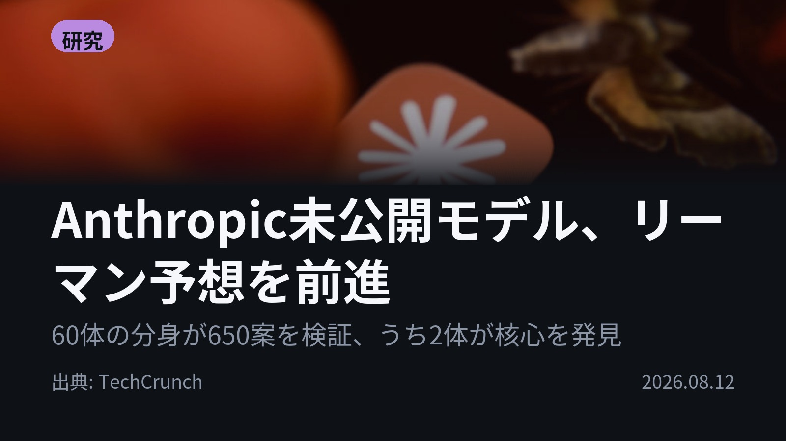
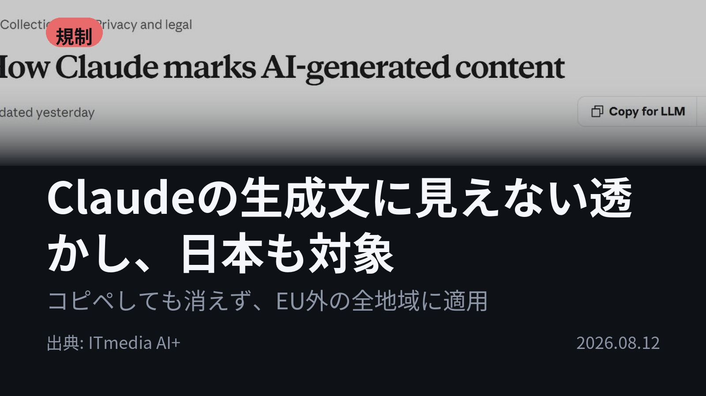
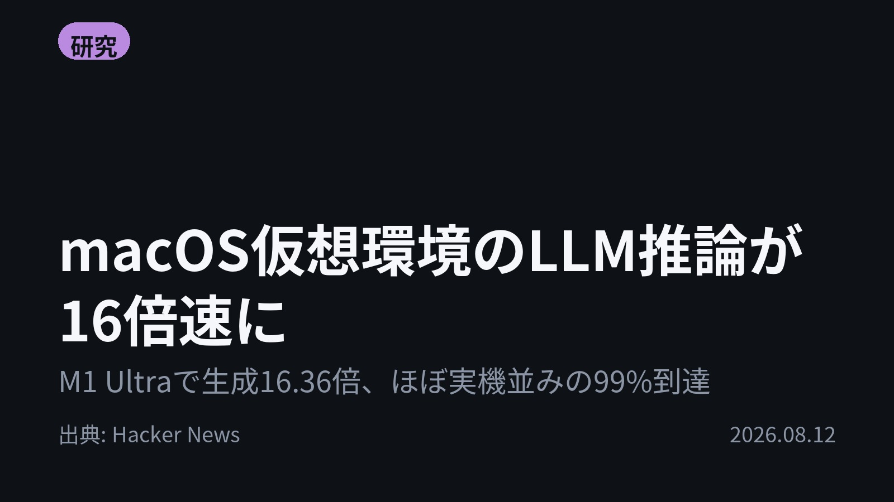
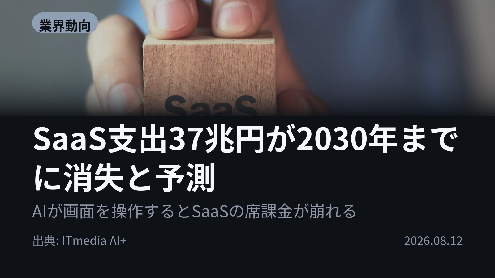

今日のAIニュース 下書き
2026-08-12 生成 08/12 22:06
⚠ ファクト照合で要確認の項目があります。
各ニュースの警告を確認してから投稿してください。
X（4投稿）
Anthropic未公開モデル、リーマン予想を前進
原題: An unreleased Anthropic model made progress on one of math’s biggest unsolved problems

60体の分身が650案を検証し、2体が核心に届いた。 Anthropicの未公開モデルが150年未解決のリーマン予想を前進させた。 指示したのは数学の訓練がない社員。「本気で挑んで」と促し1日半待っただけ。 #AI #Anthropic（出典: TechCrunch）
重み 220 / 280（見た目 131字）
要確認:
［数値］3100万 — この数値の根拠が本文に見つかりません
［数値］2人 — この数値の根拠が本文に見つかりません
［固有名詞］リーマン — この語が本文に見つかりません
［固有名詞］サブエージェント — この語が本文に見つかりません
［固有名詞］アイデア — この語が本文に見つかりません
［固有名詞］トークン — この語が本文に見つかりません
［固有名詞］TechCrunch — この語が本文に見つかりません
Claudeの生成文に見えない透かし、日本も対象
原題: Anthropic、「Claude」で生成したテキストに“見えない透かし” 日本を含むグローバルに適用へ

Claudeの文章は、コピペしても痕跡が残る。 Anthropicが生成テキストに機械可読な透かしを埋め込む。EU AI Act対応だが適用は日本を含む世界全体で、8月2日以降のモデルが対象。 検出手段はまだ未公開。 #生成AI #Claude（出典: ITmedia AI+）
重み 225 / 280（見た目 136字）
macOS仮想環境のLLM推論が16倍速に
原題: Apple Silicon and macOS VMs: Faster LLM Inference with llama.cpp

同じVM、同じモデルで、生成速度が16.36倍になった。 macOSの仮想GPUが性能を過少申告していたのが原因。Metalの応答を書き換える互換レイヤーで、M1 Ultraのプロンプト処理は実機の98%に届いた。 #AI #llamacpp（出典: Hacker News）
重み 217 / 280（見た目 136字）
要確認:
［固有名詞］レイヤー — この語が本文に見つかりません
［固有名詞］プロンプト — この語が本文に見つかりません
［固有名詞］プロセス — この語が本文に見つかりません
［固有名詞］Hacker — この語が本文に見つかりません
［固有名詞］News — この語が本文に見つかりません
SaaS支出37兆円が2030年までに消失と予測
原題: 37兆円のSaaS支出が2030年までに「消える」 Gartnerが予測するエージェントAIの破壊力

AIが画面を操作し始めたら、SaaSは何に課金するのか。 Gartnerは、企業向けソフト支出の最大2340億ドル（約37兆円）が2030年までにエージェント型AIの影響にさらされると予測。 ユーザー数課金の前提が崩れる。 #AI #SaaS（出典: ITmedia AI+）
重み 226 / 280（見た目 135字）
要確認:
［数値］2割 — この数値の根拠が本文に見つかりません
［固有名詞］エージェント — この語が本文に見つかりません
［固有名詞］エージェントアービトラージ — この語が本文に見つかりません
［固有名詞］ベンダー — この語が本文に見つかりません
Instagram（カルーセル 6枚）

{kind=link}
{kind=link}
{kind=link}
{kind=link}
{kind=link}
{kind=link}
{kind=link}
{kind=link}
{kind=link}
60体のAIが650案を試し、150年解けなかった難問が一歩進みました。 今日の4本は「AIが人の手を離れて動き出した」話で揃っています。 1. Anthropicの未公開モデルが、リーマン予想が成り立つ範囲の下限を大きく押し上げました。60体のサブエージェントのうち、核心のアイデアを出したのは2体。13体が着想を補助し、30体は空振り、13体が検証役、2体が論文の初稿を書きました。 出力トークンは合計3100万。結果は社内の数学者2人が確認し、証明支援ソフトLeanで形式化されています。(TechCrunch) 2. Claudeが生成したテキストに、人間には知覚できない電子透かしが入ります。テキストの一部として織り込まれるので、コピペで別の場所へ移しても一緒に移動します。画像などのファイルにはC2PA準拠の来歴メタデータが付きます。 EU AI Act第50条（違反時は最大1500万ユーロ、または全世界売上高の3%）への対応ですが、適用は日本を含む世界全体。ただし検出の仕組みは後日公開の技術文書待ちで、今は手元で確かめる手段がありません。(ITmedia AI+) 3. macOSの仮想マシンでllama.cppが遅かった原因は、Appleの仮想GPUが自分の能力を実際より低く申告していたことでした。アプリはその答えを見て遅いGPUコードを選んでしまう。 Metalへの応答を書き換える小さな互換レイヤーを1プロセスに挟むだけで、M1 UltraのTinyLlama 1.1Bはプロンプト処理11.08倍・生成16.36倍に。Gemma 4 12Bでは実機の99.59%のプロンプト速度に届きました。(Hacker News) 4. Gartnerが名付けたのは「エージェントアービトラージ」。AIが複数のシステムをまたいで作業すると、人が従来型ソフトの画面を開かなくなり、ユーザー数の増加と需要の増加が結び付かなくなります。 影響を受けるのは企業向けソフト支出の最大2340億ドル（約37兆円）、2030年のSaaS支出の約2割。ただしSaaSが消えるわけではなく「異なる形で続く」、既存ベンダーにも新規参入者にも脅威であり機会でもある、という見立てです。(ITmedia AI+) 5. 4本に共通するのは、AIが「使う道具」から「自分で進める主体」に移りつつあること。だからこそ、誰の成果なのか・どこまでAIが関わったのか・何に課金するのかが、数学でも企業システムでも同時に問い直されています。 毎朝、その日のAIニュースを4本だけに絞って届けています。流し読みで置いていかれたくない方は、フォローと保存をどうぞ。 #AI #生成AI #人工知能 #AIニュース #テクノロジー #ArtificialIntelligence #GenAI #Claude #Anthropic #LLM #ローカルLLM #AIエージェント #AI活用 #AI規制 #リーマン予想 #EUAIAct #電子透かし #C2PA #llamacpp #AppleSilicon #Gartner #SaaS
1316字（Instagram上限 2,200字）
この日の選定理由
Anthropic未公開モデル、リーマン予想を前進
数学の訓練がない社員が「本気で挑んで」と指示しただけで1日半後に成果が出た。AIが数学的発見の主体になり得ることを示し、著者性をめぐる論争も起きている。
Claudeの生成文に見えない透かし、日本も対象
EU AI Act第50条への対応だが適用は世界全体。8月2日以降のモデルが対象で、検出手段はまだ未公開。AI生成テキストの追跡が既定路線になりつつある。
macOS仮想環境のLLM推論が16倍速に
Apple仮想GPUが能力を過少申告していたのが原因で、小さな互換レイヤーだけで実機の94〜99%まで回復した。VM上でローカルLLMを動かす開発者に直接効く発見。
SaaS支出37兆円が2030年までに消失と予測
エージェントがシステム間を横断して作業すると、人間が画面を開かなくなりユーザー数課金の前提が崩れる。ソフトウェア業界の収益モデルが根本から書き換わる。